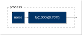
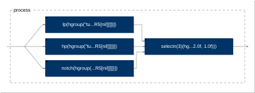
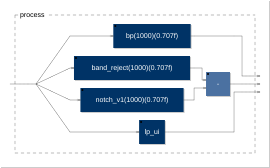

15. Writing a library¶
The idea¶
A library is a .lib file of definitions without process, used through
library("file.lib") under a prefix (chapter 13). Writing one is mostly
writing good functions, with everything from chapters 9 to 14: compile-time
parameters in capitals, fixed parameters first, a generic core and its
specialisations. What a library adds is organisation (layers, names,
prefixes), documentation in a form tools can read, and tests.
The standard libraries follow written rules, in the contribution guide of
faustlibraries (doc/docs/contributing.md) and in the repository's
AGENTS.md. This chapter builds a small library by those rules,
tutorial.lib, with a program that uses it
and its tests.
Layers¶
The libraries are built in layers, each using the one below:
- a generic core, with all its parameters and outputs, and no interface;
- specialised functions that fix parameters or cut outputs (chapter 14);
- user-facing versions with an interface:
_ui,_ui_MIDI, or a*_demoin demos.lib.
tutorial.lib has the three: tu.svf(f, q), the generic state-variable
filter of chapter 14; tu.lp, tu.hp and tu.notch, one line each; and
tu.svf_demo, which adds a mode menu and two smoothed sliders.
The standard libraries show the same structure on a larger scale:
- filters.lib:
fi.zeroandfi.pole(chapter 4), thenfi.firandfi.iir, then the biquadsfi.tf1andfi.tf2(tf2(b0,b1,b2,a1,a2) = iir((b0,b1,b2),(a1,a2));), then the analog prototypesfi.tf2sthrough the bilinear transform, and finally the filters users call:fi.resonlp,fi.lowpass(N, fc),fi.peak_eq... - physmodels.lib: building blocks (waveguides, terminations,
pm.chain), then instrument models, then playable versions. The contribution guide names the clarinet as the reference:pm.clarinetModel(tubeLength, pressure, reedStiffness, bellOpening)is the core "with every parameter explicit and no UI",pm.clarinetModel_ui(pressure)adds sliders, andpm.clarinet_ui_MIDIpairs the core with a blower and MIDI controls. - compressors.lib: gain computers in decibels, then channel linking for N channels, then feed-forward and feedback topologies, then mono, stereo and quad versions by partial application.
The file header¶
//#################################### tutorial.lib ########################################
// A small library written for chapter 15 of the Faust tutorial: a
// state-variable filter in three layers. Its official prefix is `tu`.
// ...
//########################################################################################
ma = library("maths.lib");
si = library("signals.lib");
tu = library("tutorial.lib"); // for code copied from this file into a program
declare name "Faust Tutorial Library";
declare version "1.0.0";
declare author "The Faust tutorial";
declare license "MIT";
- A description, which says the official prefix. The prefix is also
added to
stdfaust.libwhen a library joins the standard set. - The other libraries it uses, each under its own prefix. A library calls another only through its prefix, never by a bare name.
- The library binds its own prefix, so that
tu.lpworks in code copied from the file into a program. declare name,version,author,license.
Documentation blocks¶
Every public function has a documentation block in a fixed format, which the tools of faustlibraries turn into the online documentation:
//-------------------`(tu.)lp`---------------------
// Lowpass state-variable filter, the first output of `svf`.
//
// #### Usage
//
// ```
// _ : lp(f, q) : _
// ```
//
// Where:
//
// * `f`: cutoff frequency in Hz
// * `q`: quality factor
//
// #### Test
// ```
// tu = library("tutorial.lib");
// lp_test = no.noise : tu.lp(1000, 0.707);
// ```
//---------------------------------------------------
declare lp license "MIT";
lp(f, q) = svf(f, q) : _, !, !;
- The title names the function with its prefix, in backquotes.
- Usage shows the shape of the block:
_ : lp(f, q) : _says one input and one output. Readers look here first. - Where describes each parameter; one that must be a constant is written in capitals and documented as a constant numerical expression.
- Test is a small program that uses the function; it also exists in the test files (below).
- A
declare ... licenseper function, with an SPDX identifier.
Names¶
- Internal helpers go inside a
withblock or anenvironment, or start with_, so that they are not part of the public interface. Never use another library's_names. - Fixed parameters first, the signal last (chapter 12); capitals for compile-time parameters (chapter 9).
- Keep existing names. A renamed function keeps its old name for one release, as an alias declared deprecated (exercise 2):
faust
declare notch_v1 deprecated "use band_reject";
notch_v1 = band_reject;
- Versions follow semantic versioning: a new function raises the minor number, an incompatible change the major number, in the same commit.
Tests¶
Each documented test also lives in a file tests/<library>_tests.dsp, one
definition per function (tutorial_tests.dsp):
import("stdfaust.lib");
tu = library("tutorial.lib");
svf_test = no.noise : tu.svf(1000, 0.707);
lp_test = no.noise : tu.lp(1000, 0.707);
hp_test = no.noise : tu.hp(1000, 0.707);
notch_test = no.noise : tu.notch(1000, 0.707);
svf_demo_test = no.noise : tu.svf_demo;
examples/15/tutorial_tests.dsp

It imports the tutorial's own library, which the browser does not have: run it with a local compiler, next to that library.
// The tests of tutorial.lib, one definition per documented function, as in
// faustlibraries' tests/<library>_tests.dsp. Each test is evaluated on its
// own with faustprobe --eval, and must produce a finite, non-zero signal.
import("stdfaust.lib");
tu = library("tutorial.lib");
svf_test = no.noise : tu.svf(1000, 0.707);
lp_test = no.noise : tu.lp(1000, 0.707);
hp_test = no.noise : tu.hp(1000, 0.707);
notch_test = no.noise : tu.notch(1000, 0.707);
svf_demo_test = no.noise : tu.svf_demo;
process = lp_test;faustlibraries compiles each test on its own (faust -pn lp_test), stores
a reference output, and make check compares new versions against it. A
test must produce a non-zero signal, so that a regression shows. With
faustprobe, all the tests of a file can be evaluated in one command, each
as its own output:
faustprobe --double --in zero -n 4410 --quiet --eval svf_test --eval lp_test --eval hp_test --eval notch_test --eval svf_demo_test tutorial_tests.dsp
and a program that uses the library (use_library.dsp)
checks it end to end:

It imports the tutorial's own library, which the browser does not have: run it with a local compiler, next to that library.
// A program that uses tutorial.lib through its prefix, like stdfaust.lib
// does for the standard libraries.
import("stdfaust.lib");
tu = library("tutorial.lib");
process = tu.svf_demo;Pitfalls¶
- A library has no
process. It is checked through programs that use it, and through its tests. - Bare names across libraries. Inside
tutorial.lib,ma.PIworks becausemais bound in the file;PIalone would not. - Usage lines must be true. The survey of faustlibraries made for this
tutorial found a few that are not (
fi.convNshows one input where the function has N): a wrong usage line misleads every reader.
Exercises¶
All three extend tutorial.lib into
tutorial_v2.lib, version
1.1.0, used by ex_use_v2.dsp.
examples/15/solutions/ex_use_v2.dsp

It imports the tutorial's own library, which the browser does not have: run it with a local compiler, next to that library.
// Exercises 1 to 3: the new functions of tutorial_v2.lib, a bandpass with
// its documentation and test, a renamed filter whose old name is a
// deprecated alias, and a _ui layer.
import("stdfaust.lib");
tu = library("tutorial_v2.lib");
process = _ <: tu.bp(1000, 0.707), tu.band_reject(1000, 0.707) - tu.notch_v1(1000, 0.707), tu.lp_ui;
// The alias is the same filter; the bandpass blocks DC; the _ui layer adds
// two controls.- Add
tu.bp, the bandpass output ofsvf, with a complete documentation block and a test. - Rename
notchtoband_reject, keeping the old name as a deprecated alias, and check that both give the same filter. - Add a
_uilayer,tu.lp_ui, with a cutoff and a Q slider.